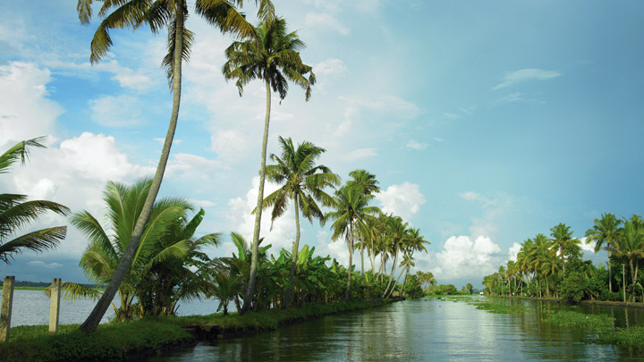

Kerala
Kerala, a state on India's tropical Malabar Coast, has nearly 600km of Arabian Sea shoreline. It's known for its palm-lined beaches and backwaters, a network of canals. Inland are the Western Ghats, mountains whose slopes support tea, coffee and spice plantations as well as wildlife. National parks like Eravikulam and Periyar, plus Wayanad and other sanctuaries, are home to elephants, langur monkeys and tigers!


Alapuzha was the only district in Kerala without public forest land. But that changed in 2013, when 14.5 acres (5.9 ha) of land at Veeyapuram was declared as reserved forest by the Forest and Wildlife Department
From ancient times Ernakulam district has played a part in the political history of south India. The Jews, Syrians, Arabs, Chinese, Dutch, British and Portuguese seafarers followed the sea route to the Kingdom of Cochin and left their impressions in the town. In 1896, the Maharaja of Cochin initiated local administration by forming a town council in Ernakulam
Idukki (ഇടുക്കി)is a district in the Indian state of Kerala.[1] It was constituted on 26 January 1972, by splitting the district of Kottayam into two parts. Its division was earlier headquartered at Kottayam city, but moved to Painavu in June 1976. Idukki district lies amid the Western Ghats of Kerala.


Kannur district was ruled by the Chera dynasty as per the recorded-history, from centuries before Christ till the medieval period, covered all of Kerala, Kanyakumari District and western Tamil Nadu.[5] The Mushika dynasty, also called the Nannans and later the Kolathiris, were relatives of the Cheras and ruled the Kannur-Wayanad-Kasaragod area (Kolathunadu) as their regents
Kozhikode or Calicut district, in the central part of the former Malabar district, is a district of Kerala state, on the southwest coast of India. The city of Kozhikode, also known as Calicut, is the district headquarters. The district is 38.25% urbanised


Kasaragod or Kasargod is one of the 14 districts in the southern Indian state of Kerala. It is the northernmost district of Kerala and is included in the North Malabar region. It is also known as Saptha Bhasha Sangama Bhoomi (The land of seven languages), as seven languages namely Malayalam, Tulu, Kannada, Marathi, Konkani, Beary, and Urdu are spoken, unlike the other districts of Kerala
Kollam district (formerly Quilon) is one of 14 districts of the state of Kerala, India. The district has a cross-section of Kerala's natural attributes; it is endowed with a long coastline, a major Laccadive Sea seaport and an inland lake (Ashtamudi Lake). The district has many water bodies. Kallada River is one among them, and the east side land of river is East Kallada and the west side land is West Kallada.

Kottayam is one of fourteen districts in the state of Kerala, India. Kottayam district comprises six municipal towns: Kottayam, Changanassery, Pala, Erattupetta, Ettumanoor, and Vaikom. It is the only district in Kerala that does not border the Arabian Sea or any other states.
Malappuram (/mələppurəm/ (About this soundlisten)) is one of the 14 districts in the Indian state of Kerala, with a coastline of 70 km (43 mi). The city of Malappuram, the district headquarters, gives the district its name. It is the most populous district of Kerala, which is home to around 13% of the total population of the state.[13] The district was formed on 16 June 1969

Palakkad District, in the southeastern part of the former Malabar district, is one of the 14 districts of the South Indian state of Kerala. Also, it is the largest district in Kerala from 2006. The city of Palakkad is the district headquarters
Pathanamthitta District is a district in the southern part of Kerala, India. The district headquarters is in the town of Pathanamthitta. There are four municipalities in Pathanamthitta: Tiruvalla, Adoor, Pathanamthitta and Pandalam.


Thiruvananthapuram District is the southernmost district in the Indian state of Kerala. The district was created in 1949, with its headquarters in the city of Thiruvananthapuram, which is also Kerala's capital. The present district was created in 1956 by separating the four southernmost Taluks of the erstwhile district to form Kanyakumari district. The district is home to more than 9% of total population of the stat!
Thrissur (formerly Trichur) is a district of Kerala situated in the central part of that state. Spanning an area of about 3,032 km2 (1,171 sq mi), Thrissur district is home to over 9% of Kerala's population.


Wayanad is an Indian district in the north-east of Kerala state with administrative headquarters at the municipality of Kalpetta. It is set high on the Western Ghats with altitudes ranging from 700 to 2100 meters.[5] The district was formed on 1 November 1980 as the 12th district in Kerala by carving out areas from Kozhikode and Kannur districts